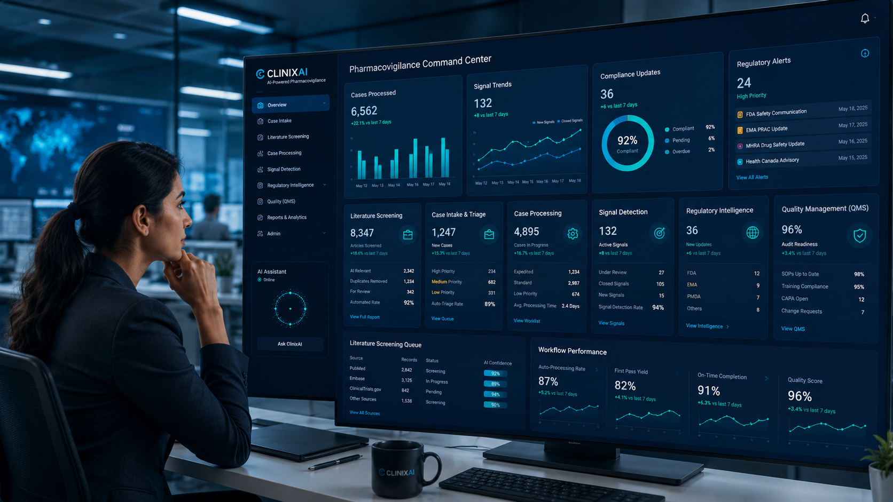

Literature Screening
AI-assisted monitoring, relevance review, prioritization and documentation support.
Support high-volume Drug Safety workflows with AI-assisted screening, triage, documentation and workflow intelligence while keeping expert review central.

ClinixAI focuses on PV workflows where intelligent assistance can reduce manual burden and improve consistency.
AI-assisted monitoring, relevance review, prioritization and documentation support.
Support incoming safety information review, routing, duplicate checks and seriousness prompts.
Assist coding prompts, narrative drafting, quality review preparation and structured documentation.
Surface patterns and emerging safety trends for expert evaluation.
Monitor requirements, impact areas and safety communication changes.
Operational visibility, bottleneck analysis, KPI views and process improvement support.
AI should accelerate Pharmacovigilance work, not remove accountability. ClinixAI solution design keeps medical, scientific, quality and regulatory review in the workflow.
Every workflow is scoped around clear boundaries, review steps and expected outputs.
Designed to complement safety systems and established PV operations without forcing disruptive change.
Start with one use case, prove value, then scale responsibly.